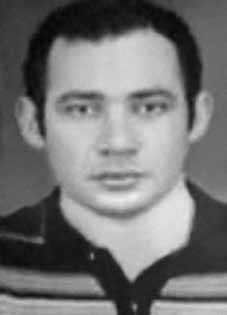

Francisco
das Chagas
Pereira
CIRCUNSTÂNCIAS DA MORTE
Após atuar como policial militar e bancário no nordeste, Francisco das Chagas Pereira mudou-se para o Rio de Janeiro, em 1970, já com uma trajetória de militância política no PCB, conforme depoimento de seu irmão, Almir Pereira Dornelo.
Francisco passou a trabalhar na Embratel em 1970. Testemunhos de funcionários, apresentados por seu irmão no processo da CEMDP, enfatizam que ele era bastante ativo na empresa, mantendo uma boa relação, inclusive, com o então diretor, coronel Galvão. Conforme documento produzido pela Polícia Federal, Francisco foi acusado de distribuir, dentro da empresa, “material impresso de cunho subversivo” e foi considerado o principal suspeito de, no dia 6 de agosto de 1971, atear fogo em material de expediente da Embratel.
Naquele dia, segundo o mesmo documento, teria fugido da segurança interna da empresa, não mais retornando ao trabalho. São imprecisas as informações acerca da movimentação de Francisco das Chagas Pereira após deixar o país. Conforme consta no processo da CEMDP, de acordo com relato do irmão de Francisco, a última notícia de seu paradeiro pelos familiares foi um telefonema, em 1971, em que Francisco afirmava estar no Chile apoiando um partido político, e que “se o tal partido fosse vitorioso, tudo estaria bem com ele; do contrário, não saberia qual seria o seu futuro a partir dali”.
Em abril de 2014, Cecília Hermosilla, chilena, entrou em contato com a Comissão Estadual da Verdade da Paraíba (CEV-PB), afirmando que foi colega de Francisco das Chagas Pereira na faculdade de Direito da Universidade do Chile, em Santiago, entre 1972 e julho de 1973. Uma série de documentos localizados pela Comissão Nacional da Verdade, em pesquisa realizada nos arquivos do Ministério das Relações Exteriores (Seção de Arquivo Histórico e Seção de Correspondência Especial) e em diversos fundos recolhidos ao Arquivo Nacional, comprova a presença de Francisco no Chile entre 1971 e 1973 – posteriormente, portanto a seu “ desaparecimento” em 1971 – e indica que teria sido um “contato” do Adido Militar junto à Embaixada do Brasil em Santiago.
Documento do Centro de Informações da Polícia Federal, datado de março de 1973, informa que Francisco das Chagas Pereira teria sido “morto quando participava de atividades de guerrilhas na Bolívia” e solicita que, em consequência, “sejam cancelados os Pedidos de Busca porventura existentes sobre o mesmo e sejam dirimidas as dúvidas por acaso surgidas a respeito”. Por outro lado, informe do Centro de Informações do Exterior (CIEX/MRE), datado de janeiro de 1975, encaminha ao SNI e demais órgãos de informação uma relação de “elementos subversivos brasileiros considerados ‘perigosos’ que se encontravam no Chile e aos quais o Governo chileno concedeu salvo-conduto após o movimento de 11/9/73”, na qual consta do nome de Francisco das Chagas Pereira.
After working as a military police officer and banker in the northeast, Francisco das Chagas Pereira moved to Rio de Janeiro in 1970, already with a history of political activism in the PCB, according to testimony from his brother, Almir Pereira Dornelo.
Francisco started working at Embratel in 1970. Employee testimonies, presented by his brother in the CEMDP process, emphasize that he was very active in the company, maintaining a good relationship, including with the then director, Colonel Galvão. According to a document produced by the Federal Police, Francisco was accused of distributing, within the company, “printed material of a subversive nature” and was considered the main suspect of, on August 6, 1971, setting fire to Embratel office material.
On that day, according to the same document, he escaped from the company's internal security and never returned to work. Information about Francisco das Chagas Pereira's movements after leaving the country is inaccurate. As stated in the CEMDP process, according to a report by Francisco's brother, the last news of his whereabouts from his family was a phone call, in 1971, in which Francisco stated that he was in Chile supporting a political party, and that “if that party were victorious, everything would be fine with him; otherwise, he would not know what his future would be from then on”.
In April 2014, Cecília Hermosilla, a Chilean, contacted the Paraíba State Truth Commission (CEV-PB), stating that she was a colleague of Francisco das Chagas Pereira at the Law faculty of the University of Chile, in Santiago, between 1972 and July 1973. A series of documents located by the National Truth Commission, in research carried out in the archives of the Ministry of Foreign Affairs (Historical Archive Section and Special Correspondence Section) and in various funds collected at the National Archives, proves the presence of Francisco in Chile between 1971 and 1973 – after, therefore, his “disappearance” in 1971 – and indicates that he would have been a “contact” of the Military Attaché at the Brazilian Embassy in Santiago.
Document from the Federal Police Information Center, dated March 1973, informs that Francisco das Chagas Pereira was “killed while participating in guerrilla activities in Bolivia” and requests that, as a result, “search requests that may exist regarding him be canceled and any doubts that may arise in this regard be resolved”. On the other hand, a report from the Foreign Information Center (CIEX/MRE), dated January 1975, sends to the SNI and other information bodies a list of “Brazilian subversive elements considered ‘dangerous’ who were in Chile and to whom the Chilean Government granted safe conduct after the movement of 9/11/73”, which contains the name of Francisco das Chagas Pereira.
Después de trabajar como policía militar y banquero en el noreste, Francisco das Chagas Pereira se mudó a Río de Janeiro en 1970, ya con un historial de activismo político en el PCB, según testimonio de su hermano, Almir Pereira Dornelo.
Francisco comenzó a trabajar en Embratel en 1970. Los testimonios de los empleados, presentados por su hermano en el proceso del CEMDP, destacan que fue muy activo en la empresa, manteniendo buenas relaciones, incluso con el entonces director, Coronel Galvão. Según un documento elaborado por la Policía Federal, Francisco fue acusado de distribuir, dentro de la empresa, “material impreso de carácter subversivo” y fue considerado el principal sospechoso de haber prendido fuego, el 6 de agosto de 1971, a material de oficina de Embratel.
Ese día, según el mismo documento, escapó de la seguridad interna de la empresa y nunca volvió a trabajar. La información sobre los movimientos de Francisco das Chagas Pereira después de su salida del país es inexacta. Según consta en el proceso del CEMDP, según un informe del hermano de Francisco, la última noticia de su paradero por parte de su familia fue una llamada telefónica, en 1971, en la que Francisco manifestó que se encontraba en Chile apoyando a un partido político, y que “si ese partido saliera victorioso, para él todo estaría bien, de lo contrario no sabría cuál sería su futuro a partir de entonces”.
En abril de 2014, Cecília Hermosilla, chilena, contactó a la Comisión de la Verdad del Estado de Paraíba (CEV-PB), afirmando que fue colega de Francisco das Chagas Pereira en la Facultad de Derecho de la Universidad de Chile, en Santiago, entre 1972 y julio de 1973. Una serie de documentos localizados por la Comisión Nacional de la Verdad, en investigaciones realizadas en los archivos del Ministerio de Relaciones Exteriores (Sección de Archivo Histórico y Sección de Correspondencia Especial) y en varios fondos recaudados en el Archivo Nacional, prueba la presencia de Francisco en Chile entre 1971 y 1973 –luego, por tanto, de su “desaparición” en 1971- e indica que habría sido un “contacto” del Agregado Militar en la Embajada de Brasil en Santiago.
Documento del Centro de Información de la Policía Federal, de marzo de 1973, informa que Francisco das Chagas Pereira fue “asesinado mientras participaba en actividades guerrilleras en Bolivia” y solicita que, en consecuencia, “se cancelen las solicitudes de búsqueda que puedan existir sobre él y se resuelvan las dudas que puedan surgir al respecto”. Por otro lado, un informe del Centro de Información Exterior (CIEX/MRE), de enero de 1975, envía al SNI y otros órganos de información una lista de “elementos subversivos brasileños considerados ‘peligrosos’ que se encontraban en Chile y a quienes el Gobierno chileno otorgó salvoconductos después del movimiento del 11/9/73”, que contiene el nombre de Francisco das Chagas Pereira.